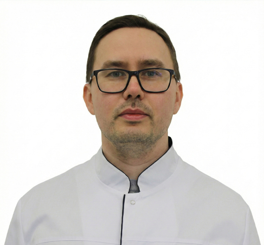
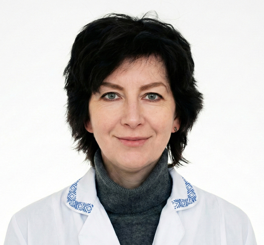
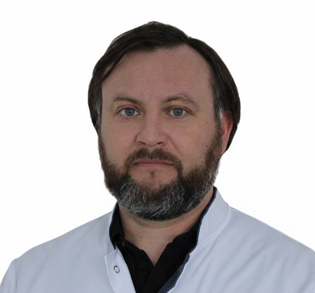

Наши специалисты
Команда профессионалов с глубокой специализацией в различных модальностях лучевой диагностики.

Врач-рентгенолог второй категорииСафин Руслан Альбертович
Врач-рентгенолог второй категории
Специализация: МРТ головного мозга, позвоночника и суставов
Образование
- ФГБОУ ВО «Казанский государственный медицинский университет» МЗ РФ, специальность «Педиатрия», квалификация «Врач», 2019 г.
- ФГАО ВО «Казанский (Приволжский) федеральный университет» г. Казань, специальность «Рентгенология», квалификация «Врач-рентгенолог», 2021 г.
- Профессиональная переподготовка: ООО Центр повышения квалификации и переподготовки «Луч знаний», специальность «Организация здравоохранения и общественное здоровье», 2023 г.
- Аккредитация: Казанская государственная медицинская академия филиал ФГБОУ ДПО "Российская медицинская академия непрерывного профессионального образования" МЗ РФ, Рентгенология, 2021 г.
- Аккредитация: ФГБОУ ДПО "Российская медицинская академия непрерывного профессионального образования" МЗ РФ, Организация здравоохранения и общественное здоровье, 2025 г.
Сертификаты
- Сертификат специалиста по рентгенологии, действителен до 2027 г.
- Аккредитация специалиста (бессрочная)
- Сертификат по МРТ-диагностике нейродегенеративных заболеваний

Врач-рентгенолог высшей категорииНемировская Татьяна Анатольевна
Врач-рентгенолог высшей категории
Специализация: КТ органов грудной клетки и брюшной полости
Образование
- ГОУ ВПО Казанский государственный медицинский университет, специальность «Лечебное дело», квалификация «Врач», 2006 г.
- ГОУ ДПО Казанская государственная медицинская академия, специальность «Рентгенология», квалификация «Врач-рентгенолог», 2008 г.
- Аккредитация: ФГБОУ ДПО РМАНПО Минздрава России, Рентгенология, 2024 г.
Сертификаты
- Сертификат специалиста по рентгенологии, действителен до 2028 г.
- Аккредитация специалиста (бессрочная)
- Сертификат по КТ-диагностике онкологических заболеваний

Врач-рентгенолог высшей категорииМихайлов Игорь Марсович
Врач-рентгенолог высшей категории
Специализация: рентгенография, костно-суставная система
Образование
- Казанский государственный медицинский институт, специальность «Лечебное дело», квалификация «Врач», 1987 г.
- Повышение квалификации: ГБОУ ДПО «Казанская государственная медицинская академия» Минздрава России, Организация здравоохранения и общественное здоровье, 2011 г., 2016 г.
- КГМА — филиал ФГБОУ ДПО РМАНПО Минздрава России, рентгенология, 2017 г.
- Аккредитация: ФГБОУ ДПО РМАНПО Минздрава России, Организация здравоохранения и общественное здоровье, 2021 г.
- Аккредитация: ФГБОУ ДПО РМАНПО Минздрава России, Рентгенология, 2022 г.
Сертификаты
- Сертификат специалиста по рентгенологии, действителен до 2026 г.
- Аккредитация специалиста (бессрочная)
- Сертификат по диагностике заболеваний опорно-двигательного аппарата
Гильванов Тимур Ахатович
Врач-рентгенолог
Специализация: МРТ сердца и сосудов, онкологическая диагностика
Образование
- ГОУ ВПО «Башкирский государственный медицинский университет», специальность «Педиатрия», квалификация «Врач», 2010 г.
- ГБОУ ВПО «Башкирский государственный медицинский университет» Минздрава России, специальность «Рентгенология», 2014 г.
- Повышение квалификации: ООО «Национальная академия современных технологий», рентгенология, 2019 г.
- ФГБОУ ВО «Башкирский государственный медицинский университет» Минздрава России, травматология и ортопедия, 2016 г.
Сертификаты
- Сертификат специалиста по рентгенологии, действителен до 2029 г.
- Аккредитация специалиста (бессрочная)
- Сертификат по МРТ-диагностике сердечно-сосудистых заболеваний